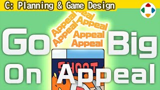
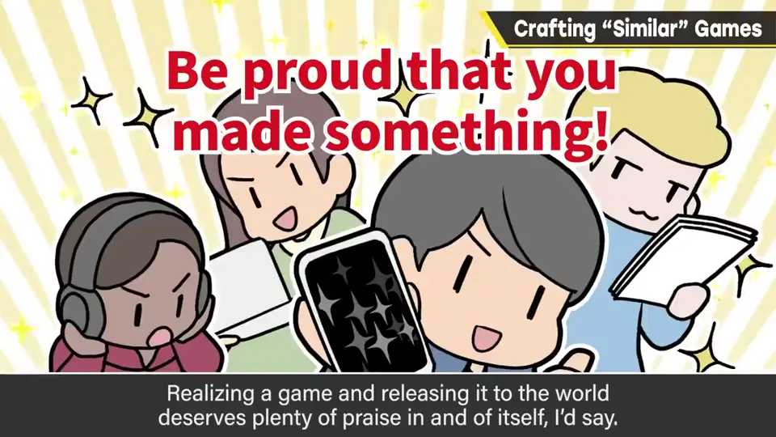
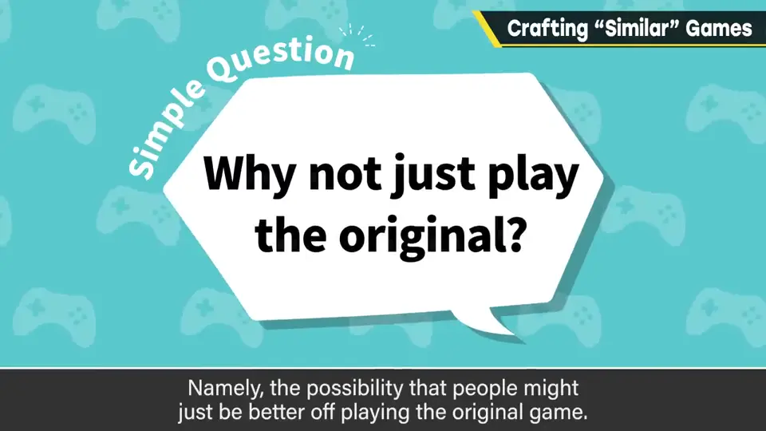
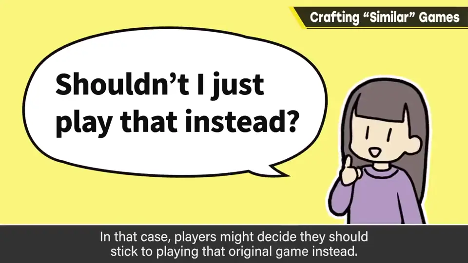
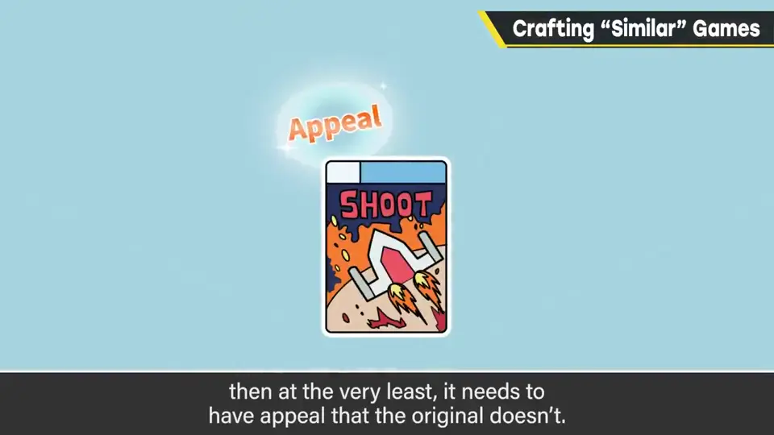
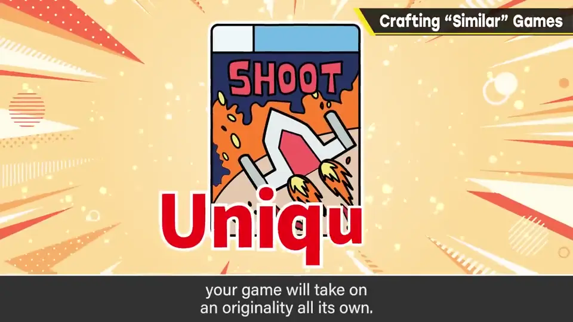

速览
憧憬某款游戏、做与之相近的游戏，在独立游戏圈尤其常见。这本身是好事：游戏业界就是这样发展、精炼起来的；最重要的是，做了总比不做强，能做成形发布到世上就值得大大称赞。但以既有作品为蓝本制作时，希望记住一点：玩原作不就好了？原作正因好玩才成为范本；明显好玩的话，玩家一般会想只玩原作。也可能原作好玩、但只玩它还不够，但只是搭便车不行。以某作为蓝本制作时，至少要有原作没有的魅力，而且不止一个，要好几个。游戏制作中最难的游戏系统企划与构建省下来了，那就要在其他方面努力；用心堆积多项魅力的过程中，就会出现这款游戏独有的原创性。不是超越不超越原作的问题——魅力是方向，没法一维衡量。一开始模仿也可以，但最后请努力让只有这款游戏才能体验的东西诞生。
1. 做出来就值得称赞 0:03
憧憬某款游戏、做出与之相近的游戏——这在独立游戏圈尤其常见。樱井认为这本身是好事：游戏业界正是这样发展、精炼起来的。

2. 「玩原作不就好了？」 0:36
但以既有作品为蓝本制作时，希望你记住一件事：玩家可能会想「玩原作不就好了？」


原作正因为好玩才成为范本。如果它明显好玩，玩家一般会想：只玩那款原作就行了。也可能原作太好玩、只玩它还不够，但光是搭便车是不行的。
3. 要有原作没有的魅力 1:04


游戏制作中最难的「游戏系统企划与构建」省掉了，那就得在其他方面加倍努力。用心堆积好几项魅力的过程中，这款游戏独有的原创性就会显现。
这不是超越或不超越原作的问题：魅力是方向，无法一维衡量。一开始模仿也行，但最后请努力让「只有这款游戏才能体验的东西」诞生。
自测题
1. 樱井如何看待以喜爱的游戏为蓝本做作品？
是好事：业界就这样发展，做出来发布就值得称赞。 0:18
2. 做类似游戏时要警惕玩家的什么想法？
「玩原作不就好了？」 0:42
3. 为什么类似作品要在别处加倍努力？
省掉了最难的游戏系统企划与构建，需要在其他方面堆积多项原作没有的魅力。 1:22